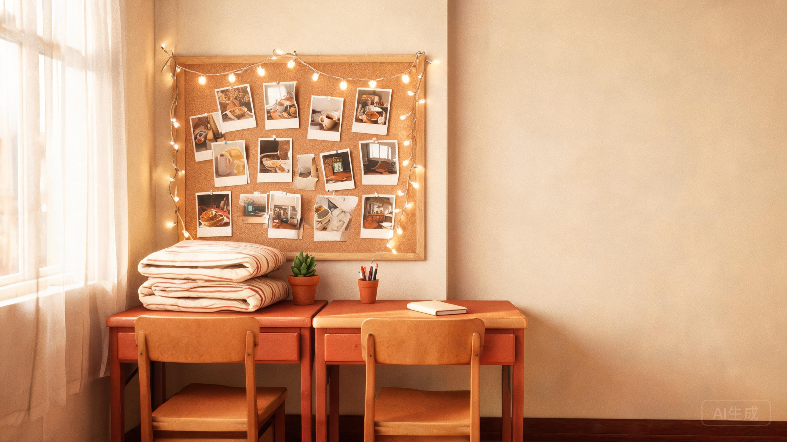

阿
阿杰
2 小时前
整理旧相册时翻到大一刚入学的照片，那时候每个人的床位都空荡荡的，现在却塞满了四年的故事。



这里收藏着我们共同生活的点点滴滴，随时翻阅，随时怀念。
阿杰在阳台弹吉他，全宿舍合唱《晴天》，楼下路过的人抬头看了好久。
阿杰
2 小时前
整理旧相册时翻到大一刚入学的照片，那时候每个人的床位都空荡荡的，现在却塞满了四年的故事。
小林
昨天
考试周结束那晚，大家点了外卖在地板上围成一圈，吃到最后谁也不敢去开门拿空盒。